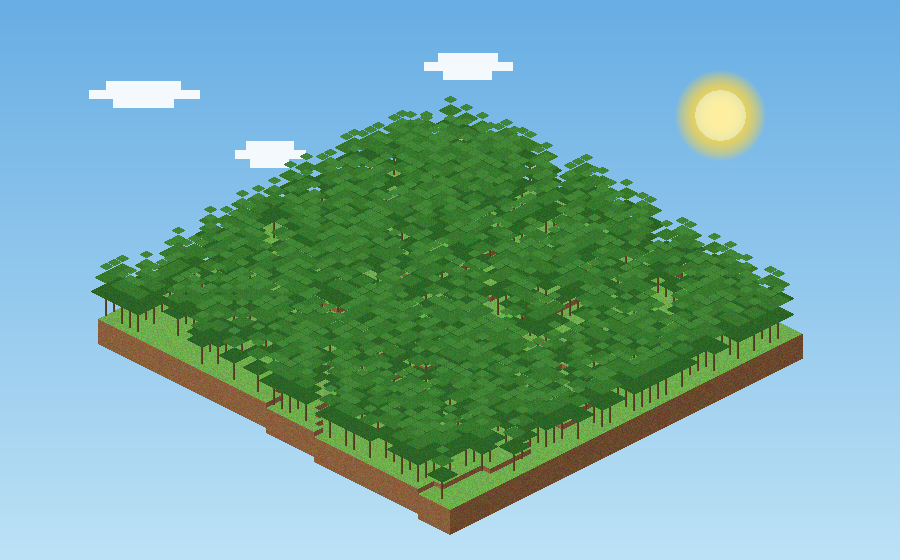
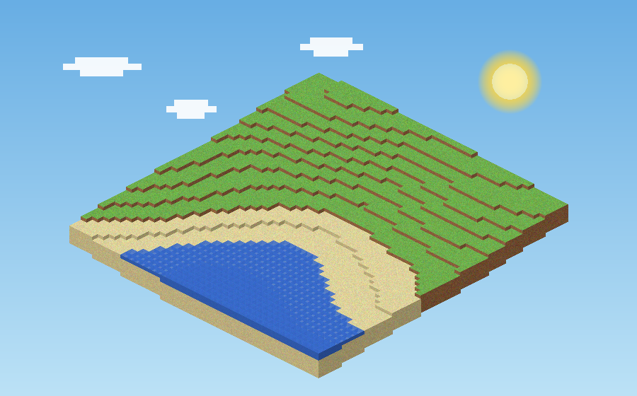
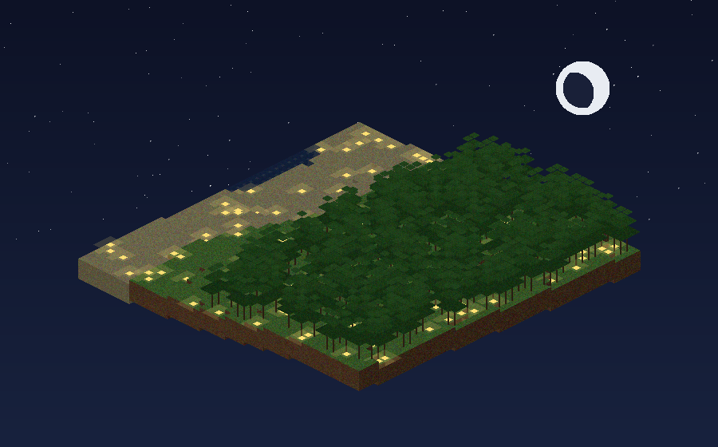

블록을 쌓고, 새로운 땅을 탐험하고, 나만의 공간을 완성해. 설치 없이 브라우저에서 바로 시작하는 오리지널 블록 샌드박스.

게임에 들어가기 전에 스킨을 꾸며 봐! 헤어스타일과 눈 색상부터 옷 무늬·액세서리까지 선택하면 실제 게임 캐릭터에 반영돼.
미리보기는 오리지널 픽셀 캐릭터야. 인게임에서도 같은 색상과 장식이 적용돼.
캐릭터와 갑옷·보조 손·2×2 개인 제작·27칸 가방·9칸 핫바를 익숙한 E키 화면에 모았습니다. 마우스로 아이템을 옮기고 나누거나, Shift+클릭으로 빠르게 정리할 수 있습니다. 모바일은 화면을 가리던 11개의 동작 버튼을 4개로 줄이고 이동 조이스틱·터치 채굴·설치 방식으로 개편했습니다.
익숙한 블록 게임의 즐거움을 브라우저에서 바로 만나 보세요
시드 기반 노이즈로 산, 바다, 해변, 숲, 동굴이 펼쳐집니다. 걸어가면 청크가 계속 생성되는 오픈 월드.
좌클릭으로 캐고 우클릭으로 쌓습니다. 계단·반 블록·문·상자를 활용해 더 세밀하게 건축하세요. 서바이벌에선 캐낸 블록만 쓸 수 있고, 돌은 조약돌로, 잔디는 흙으로 떨어집니다.
해가 지면 좀비·스켈레톤·거미가 어둠 속에서 나타납니다. 낮이 되면 햇빛에 타오르니, 밤새 버텨보세요.
크리에이티브 B키의 블록 상자에서 자연·목재·석재·광석 등으로 분류하거나 이름을 검색할 수 있습니다. 휠과 숫자키로 블록을 교체하세요.
36칸 인벤토리와 9칸 핫바를 사용하고, 월드에 설치한 상자에는 아이템 18칸을 따로 보관할 수 있습니다.
돼지·소·양·닭이 초원을 돌아다닙니다. 사냥해 얻은 고기를 우클릭으로 먹으면 배고픔이 회복되고, 잘 먹으면 체력도 재생됩니다.
체력·배고픔을 관리하며 사냥하고 밤을 버티는 서바이벌. 무한 블록과 비행의 크리에이티브. 시작 화면에서 선택하고 언제든 전환하세요.
수원에서 물이 아래와 옆으로 퍼지고, 흐르는 칸은 깊이에 따라 높이가 달라집니다. 동굴 안의 물웅덩이도 만날 수 있습니다.
제작대에서 재료를 직접 배치해 도구를 만들고, F5로 WebCraft 오리지널 블록형 모험가를 3인칭으로 볼 수 있습니다.
아래 장면은 전부 게임 엔진의 실제 지형 생성기로 렌더링한 것 — 스크린샷이 아니라 약속입니다


복잡한 튜토리얼은 없습니다. 클릭하고, 걷고, 부수고, 쌓으면 끝
| W A S D | 이동 |
| Space | 점프 / 수영 / 비행 상승 |
| Shift | 달리기 / 비행 하강 |
| 마우스 | 시점 회전 (포인터 잠금) |
| 좌클릭 | 블록 캐기 / 몹 공격 |
| 우클릭 | 설치 · 음식 먹기 · 문 열기 · 상자 사용 |
| 휠 · 1~9 | 핫바 아이템 선택 |
| F | 비행 모드 (크리에이티브) |
| F5 | 3인칭 캐릭터 |
| E | 인벤토리 · 캐릭터 미리보기 · 스킨 꾸미기 |
| C | 제작대에서 3×3 제작 가능 |
| Esc | 일시정지 · 저장 · 모드 전환 |
새 월드를 만들 때 시드를 직접 입력하거나 랜덤으로 떠나갈 수 있습니다. 같은 시드는 항상 같은 지형을 만듭니다.
나무를 캐서 판자를 만들고, 근처 돼지 한 마리를 잡아 저녁을 해결하세요. 밤이 오면 어둠 속에서 몹들이 나타납니다.
땅속에는 동굴이 숨어 있습니다. 발광석을 들고 내려가면 지하 세계가 펼쳐집니다. 물속에선 공기 방울을 챙기시고요.
처음에는 작은 웹 게임이었지만, 플레이 피드백을 바탕으로 꾸준히 발전하고 있어요.
청크 기반 월드와 다양한 지형, 인벤토리, 낮과 밤, 제작·제련, 몬스터 및 백업 기능을 발전시켰습니다.
홈페이지 스킨 스튜디오, 헤어스타일과 의상 디테일, 1인칭 손에 든 도구 표시를 추가했습니다.
계단·반 블록·여닫는 문·저장 상자를 추가하고, 모바일에서도 사용하기 편한 새 게임 런처 디자인을 적용했습니다.
플레이 후 한마디를 남겨주세요. 사이트에 공개되는 공용 방명록입니다.
개인정보나 연락처는 남기지 마세요.